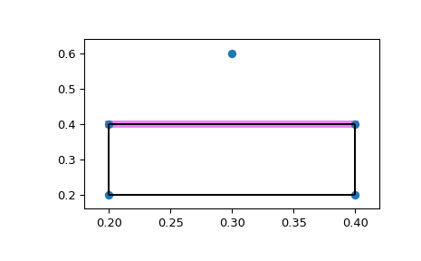

Call ConvexHull with the QG option. QG4 means
compute the portions of the hull not including
point 4, indicating the facets that are visible
from point 4.
>>> fig=plt.figure()>>> ax=fig.add_subplot(1,1,1)>>> forvisible_facetinhull.simplices[hull.good]:... ax.plot(hull.points[visible_facet,0],... hull.points[visible_facet,1],... color='violet',... lw=6)>>> convex_hull_plot_2d(hull,ax=ax) <Figure size 640x480 with 1 Axes> # may vary>>> plt.show()

Attributes:
pointsndarray of double, shape (npoints, ndim)
Coordinates of input points.
verticesndarray of ints, shape (nvertices,)
Indices of points forming the vertices of the convex hull.
For 2-D convex hulls, the vertices are in counterclockwise order.
For other dimensions, they are in input order.
simplicesndarray of ints, shape (nfacet, ndim)
Indices of points forming the simplical facets of the convex hull.
neighborsndarray of ints, shape (nfacet, ndim)
Indices of neighbor facets for each facet.
The kth neighbor is opposite to the kth vertex.
-1 denotes no neighbor.
equationsndarray of double, shape (nfacet, ndim+1)
[normal, offset] forming the hyperplane equation of the facet
(see Qhull documentation for more).
coplanarndarray of int, shape (ncoplanar, 3)
Indices of coplanar points and the corresponding indices of
the nearest facets and nearest vertex indices. Coplanar
points are input points which were not included in the
triangulation due to numerical precision issues.
If option “Qc” is not specified, this list is not computed.
goodndarray of bool or None
A one-dimensional Boolean array indicating which facets are
good. Used with options that compute good facets, e.g. QGn
and QG-n. Good facets are defined as those that are
visible (n) or invisible (-n) from point n, where
n is the nth point in ‘points’. The ‘good’ attribute may be
used as an index into ‘simplices’ to return the good (visible)
facets: simplices[good]. A facet is visible from the outside
of the hull only, and neither coplanarity nor degeneracy count
as cases of visibility.
If a “QGn” or “QG-n” option is not specified, None is returned.
New in version 1.3.0.
areafloat
Surface area of the convex hull when input dimension > 2.
When input points are 2-dimensional, this is the perimeter of the convex hull.
New in version 0.17.0.
volumefloat
Volume of the convex hull when input dimension > 2.
When input points are 2-dimensional, this is the area of the convex hull.